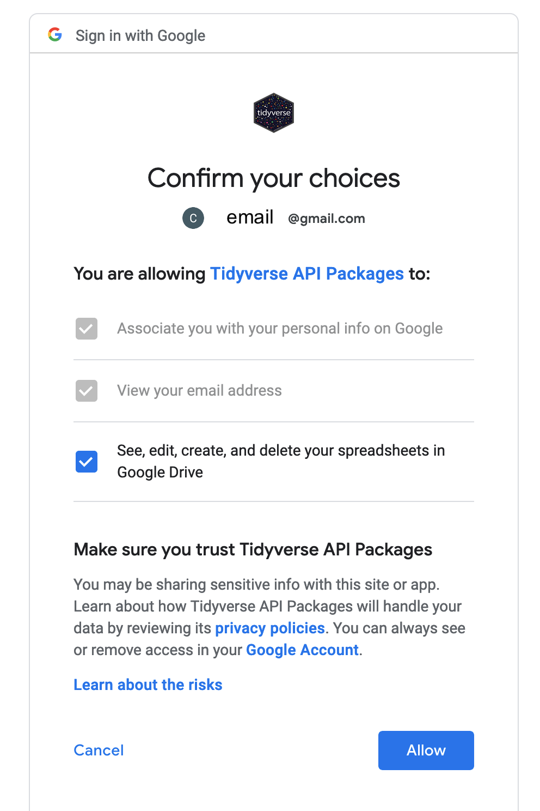
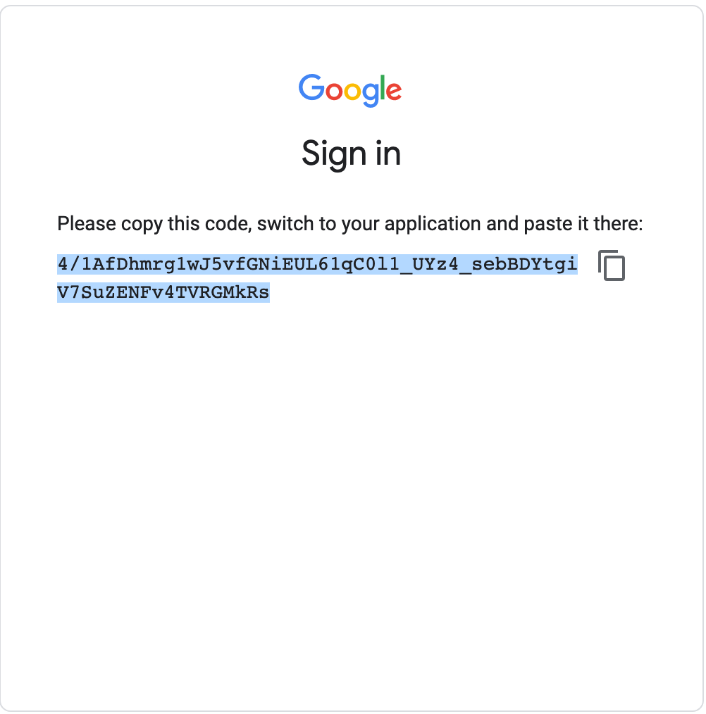
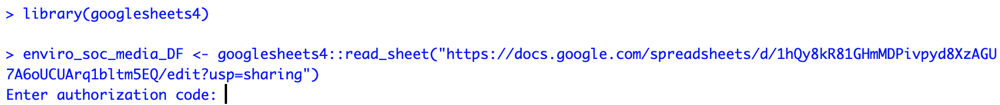
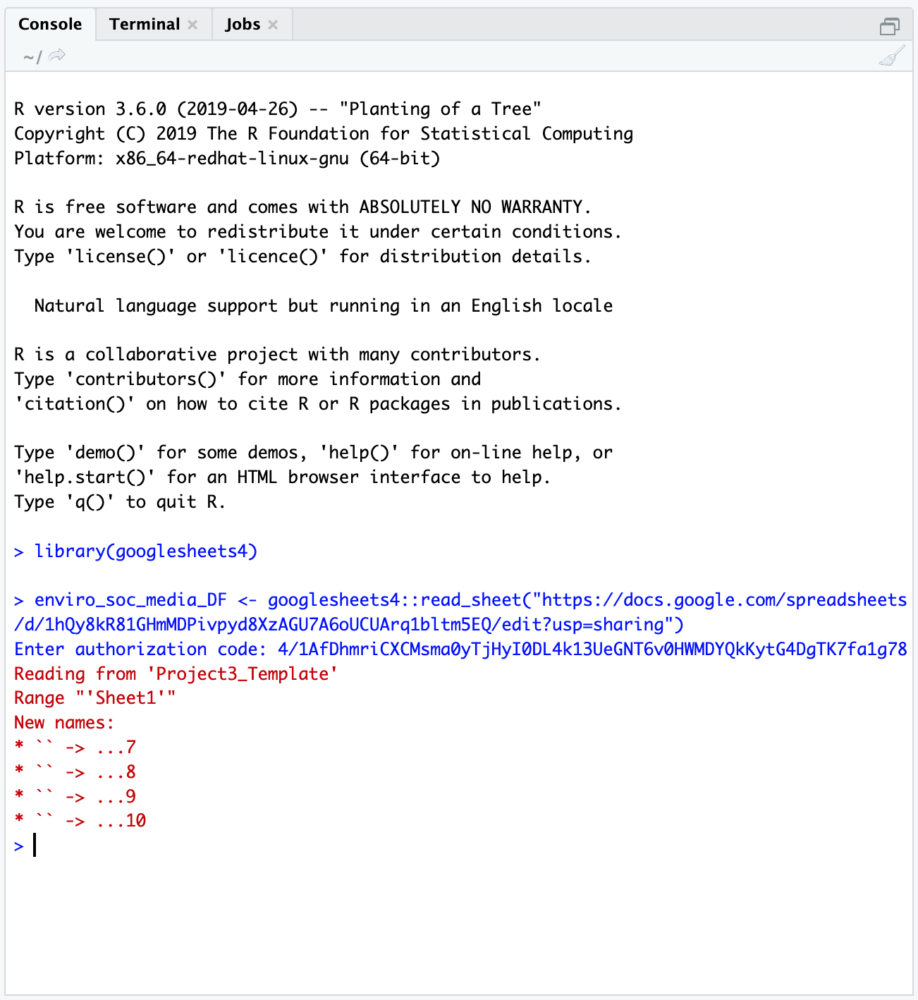

Air quality lab: Week 2
2021-09-09
Week 2 Lab Overview
Objectives
In lab this week, we will perform the following:
- collect data from PL Air sensors along transects;
- revisit and enhance community guidelines to also incorporate field safety;
- develop questions as PL Air groups to explore.
Time permitting, we may also take on the following tasks:
- viewing and interacting with the PL Air data from week 1 in
Rusing RStudio Server.
We are working toward the climate/air quality group report described here.
Designing environmental data collection
One ubiquitous method of field sampling is the transect sampling method. For transect sampling, one typically takes data at specific, equally-spaced locations along a gradient or across (micro)habitats. For one example of transect sampling air pollution, please see this Public Lab write up and/or this Inside Ecology write up. This is also a form of systematic sampling, as you would be taking measurements at locations based on a fixed pattern. For more background on sampling procedures and guidance on one way to think through sampling design, please visit this Environmental Chemical Analysis site. Note that not all of the examples there are relevant (e.g. biodiversity sampling, soil sampling), but the general principles in Sections 2.1, 2.2 (our sample is more akin to a “grab sample”), and 2.4 are pertinent.
Lab steps
Taking data with your PL Air teams
- Note that you can always see who is in your group by navigating to the Roster sub-page on Sakai then going to Group and selecting your group’s name.
- With your groups, you will select an initial location to test out running a transect with your PL Air units.
- I strongly recommend bringing a notebook and having one member of the team act as a timer. The timer (or another member) can also keep track of your distance between points. Questions to consider include: How far apart should your points be? How long should you collect data at each location?
- Here is a list of suggested locations. Quyên and I will circulate among the groups.
- Pomona College Organic Farm / 1st street
- Marston Quad and College Avenue
- Foothill Avenue and College Avenue
- Former gymnasium and active construction site near 6th and Amherst.
- As an initial exercise, we will allocate up to 1 hour collecting data.
- In that time, I would recommend performing replicates of your transects.
- I would recommend taking data at stationary points at different distances for instance to your site of interest. (Consider how the different sites could vary in terms of air quality.)
- The mobile application
Google Earthcan be used to determine your distance to a point of interest.
Enhancing the community guidelines document
Before we revisit the community guidelines document, please read this article in Small Pond Science (content warning: references sexual assault) and this Bulletin of the Ecological Society of America article (please pay special attention to Table 1).
Here are some guiding questions to consider. There are additional questions that we can and should consider as a group! Please share them, and if you are uncomfortable sharing them directly, you are welcome to anonymously pose the question in the Google doc.
- When and where does working in teams or small groups enhance field safety? When might working in teams or small groups be less than ideal for safety?
- What are the signs of physical or emotional distress? How can we support and look out for one another?
- When and where can technology facilitate safety? When and where might technology undermine field safety?
- What are examples of conditions that are unsafe in the field? How can we avoid them? How can we look out for one another with respect to avoiding these conditions or dealing with these conditions constructively?
- One example could be contact with a poisonous plant such as poison oak.
- Another could be a confrontation with another person, which could be driven by larger systemic biases.
- Finally, conditions such as uneven terrain or very open locations with no tree cover could pose issues in this time of year (or in general).
- What are best practices for communicating our comfort or discomfort in the field?
- What are the potential physical, emotional, or other barriers to participating in different forms of field work or field work in different types of locations?
Developing your group project
For this laboratory project, you will have several decisions to make:
- What question do we seek to explore with PL Air data? What variable(s) are we particularly interested in?
- What is an appropriate distance between sampling points?
- What, if any, sources or locations do we seek to sample?
- How long should we remain at each point to collect the data?
- How many replicates should we take of our data? In this context, replicates could mean the combination of distance to a location/source, time duration, and variable measured if these are variables of interest to your group.
This resource from the Royal Geographical Society may provide additional insight into designing your transects.
A note on replicating data
How might you replicate data collection to try and account for uncertainty in individual estimates? Generally there are two broad ways to achieve this: spatial replication and temporal replication. In working with your groups, please discuss the salient variables that could affect your question (e.g. distance to a road or a construction site for pollutants, tree cover for a heat island effect, and time of day). You can then develop a plan to collect data.
Additional air pollution information
Note that the PL Air units report AQI, PM 2.5, PM 10, and O3 data. You can toggle back to the previous week’s Air Quality page to see Myriad Sensors’ (PL Air company) description of how these values are estimated. However, if, for instance, you are interested in the raw values of PM 2.5 that are reported, you may wonder how these values are converted to and from AQI scores. You can navigate to this AirNow calculator to see how your data maps to AQI. If you would like to see the interpretation of AQI values, please check out this AirNow explainer site. Note - researchers are still developing ways to take the much more instantaneous data we observe on the PL Air and other sensors to “instant exposure” AQI scales. For now though we can use the 24-hour averages for PM and submit the observed data to see that mapping play out (between \(\mu g/m^3\) to AQI scores).
Analyzing PocketLab Air data
This component of the laboratory may be pushed to a later date if time does not permit in lab. In general, one straightforward way to interact with the PL Air .CSV data is to use Google Sheets. The first thing we need to do though is authorize access to our Google accounts in RStudio Server.
Authorizing access to Google sheets with the googlesheets4 package in R
This workflow also only needs to be done ONCE. The first time you interact with a Google sheet using the googlesheets4 Application Programming Interface (API) wrapper, it will ask you about permissions to store your credentials (account information). You can run these commands in the console.
The workflow is below:
- Read in an example Google sheet, which will launch an initial query about what Google account you’d like to associate with the package:
library(googlesheets4) # load the Googlesheets4 package- Now we are going to use
Googlesheets4to try and pull in a sheet. This will prompt you to grant access to your Google account the first time you run this code.
options(gargle_oob_default = TRUE) # this sets up an option for you to authenticate in your local browser rather than through the RStudio Server, which does not permit certain communication protocols
enviro_soc_media_DF <- googlesheets4::read_sheet("https://docs.google.com/spreadsheets/d/1hQy8kR81GHmMDPivpyd8XzAGU7A6oUCUArq1bltm5EQ/edit?usp=sharing") # initiate the Google credential query by calling for a shared sheetYou will then see the console print out:
Is it OK to cache OAuth access credentials in the folder
/home/CAMPUS/your_user_ID/.cache/gargle between R sessions?
1: Yes
2: No
Selection:Type 1 into the Selection: prompt.
- At the same time, another tab will open in your internet browser on your computer, displaying a window that asks you to select which of your Google account(s) to grant access to in
RStudio Serverusing thegooglesheets4package.

Select Allow. Next, you will see:

- Select
Allowagain. This will produce an authorization code that you will then copy and paste into yourRStudiosession. You can copy the code by pressing the button to the right of the authentication code.

- Next, navigate back to the internet browser tab running
RStudio Server. You will paste the code in response to theEnter authorization codeprompt waiting in the console.
 6. Paste the authorization code into the blank space next to Enter authorization code.
- Once you paste the authorization code in, you will see this type of successful response, showing you that the authentication has worked and the
read_sheetfunctiongooglesheets4will return:

Great work! You have successfully authenticated access to your Google account in your
RStudio Serveruser workspace.Going forward, even if you switch sessions, restart your session, or open a new session in
RStudio Server, you shouldn’t need to re-authenticate access to Google. Instead, your credentials will be stored in a cached file. It may ask you though if you want to use a particular “credential” (basically an account) - usually you would type1for the first account listed.
Interacting with PocketLab Air data as a Google sheet
Android data
library(googlesheets4)
library(dplyr)
### Here we are pulling in the Google Sheets data from team Paprika
airDF <- googlesheets4::read_sheet("https://docs.google.com/spreadsheets/d/14l_xiqddGl2IFpOPsjfCSSLaHLVeunBhsToimXFuPrA/edit?usp=sharing") # here, we're saying - go to this URL, pull in the Googlesheet, then store it in an object called airDF
### We can see what our data looks like by calling airDF in the console
airDF # yay!
### If we wanted to see what the average PM value was across the trial, we could, for instance, run
mean(airDF$`Particulate Matter-PM2.5 (ug/m³)`)
### We can also see more information about the variable - min, max, and some quartiles.
summary(airDF$`Particulate Matter-PM2.5 (ug/m³)`)
### We can repeat this for the more smoothed-out values of the 10-minute averaged PM 2.5 data
mean(airDF$`Particulate Matter-10 Min. Avg. PM2.5 (ug/m³)`)
summary(airDF$`Particulate Matter-10 Min. Avg. PM2.5 (ug/m³)`)iOS data
One issue with the iOS data is that the mobile application splinches the spreadsheet data. Typically, we would expect to see all of the data in a tidy set of columns, where each row is a particular time point. However, the iOS PocketLab application basically creates a new mini-spreadsheet for each sensor.
Below are the URLs for all of the iOS groups.
- Fresno: “https://docs.google.com/spreadsheets/d/15l8zplAYiLu6kmqPqo0kExe5Ww3RPeSTMlkfv2XoMDc/edit?usp=sharing”
- Aji: “https://docs.google.com/spreadsheets/d/1Q9sm9IokCP0lba-ZcBGXG2YkkSOyhRSw-4ijbs1HU-s/edit?usp=sharing”
- Shishito: “https://docs.google.com/spreadsheets/d/17KYbZqLEirxh2cAr6dOlIBJhKo5LWPuvq3dgDPZ-NHA/edit?usp=sharing”
- Bird’s Eye: “https://docs.google.com/spreadsheets/d/1QX5ESRLnq3hjeWAPinquTvK9RELK0cMvIEAjBxhG_6Q/edit?usp=sharing”
You can copy and paste this code to run it in the console in RStudio Server to clean up your own data. Note: these steps are only necessary if you have data that was collected using an iPhone.
library(googlesheets4)
library(dplyr)
### Provide a URL
# This URL is for Team Scorpion
gs_url <- "https://docs.google.com/spreadsheets/d/1gn6A3uht6e9iQ3qCmqGUTFRhP6YZLdejt5yYjhzeQks/edit?usp=sharing"
### Here, we are pulling in Google Sheets data from team Scorpion
airDF <- googlesheets4::read_sheet(gs_url,sheet=1) # we are storing the default file read in as airDFWhen you run the lines above (airDF <- ...) you may see this message from googlesheets4:
The googlesheets4 package is requesting access to your Google account. Select a pre-authorised account or enter '0' to obtain a new token. Press Esc/Ctrl + C to abort.
1: yourEmail@gmail.com
Selection: Type 1 next to Selection: and hit enter, then you can proceed.
### Reading in the same data, but in a more structured way
airDF_struct <- googlesheets4::read_sheet(gs_url,sheet=1,col_types="nntnnnnnnnn") # here I am reading in the same file but specifying the data types in the column (number or time-stamp) and storing it in a different object called airDF_struct
### What happens when we type airDF in the console?
airDF # cool! We see a subset of our data displayed
### We are going to pull in several helper functions
### using the command "source"
### FMI: ?source
source("https://raw.githubusercontent.com/EA30POM/Fall2021/main/helpers/CleanPLiOS.R") # you only need to run this code once per session
### Using a helper function to clean up our iOS Air Data
airCleanDF <- cleanup_air_function(airDF,airDF_struct)
### Viewing our clean data
airCleanDF %>%
head() %>% # view first 6 rows
View() # pop up an Excel-like data viewer.
### Saving the clean data:
### Option 1: Add a new sheet to your Google Sheet with the clean data
googlesheets4::write_sheet(airCleanDF, ss=gs_url, sheet="Clean") # this will create a new sheet called "Clean" for the clean data.
# Then you can go into the Google Sheet to download the CSV file and upload that to the PL Notebook site.
### Option 2: Saving it as a CSV file
### You will then need to download the file to your own
### computer use it.
readr::write_csv(airCleanDF,file="~/PLAirDataClean.csv")In the last segment of the code above, you might notice something interesting looking: this %>% pipe operator. The pipe operator %>% lets you daisy chain commands together into a sequence. It is a handy way to make a complex operation with intermediate steps more transparent. The visualization below describes what pipes do in R in linking up functions:

Schematic of the pipe %>% operator in R (Altaf Ali)
Now that we finally have clean data (yay!) we can calculate the same types of summary statistics.
### Calculating the mean and summary statistics for PM data
mean(airCleanDF$`PM2.5 (µg/m³)`)
summary(airCleanDF$`PM2.5 (µg/m³)`) # note that the variable names are a bit different from the Android ones
### We can also repeat this for the smoother averaged values
mean(airCleanDF$`Mean PM2.5 (µg/m³)`)
summary(airCleanDF$`Mean PM2.5 (µg/m³)`)